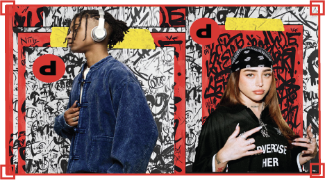
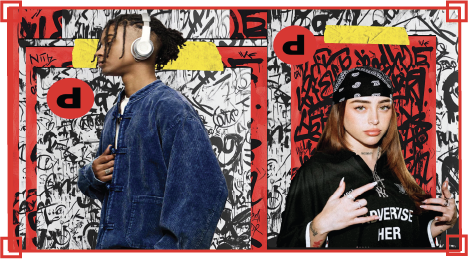

This was a university campaign project for Depop.
The goal was to promote the app and encourage more people to engage with it.
I combined bold visuals with urban textures to make the brand stand out and appeal to a younger audience.